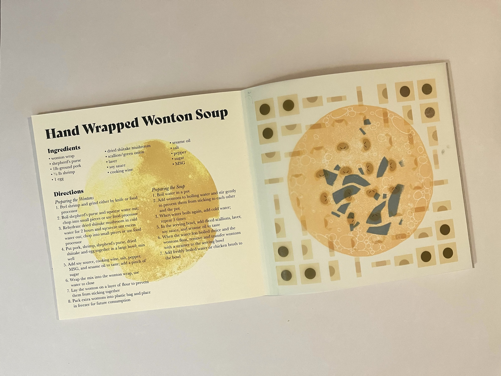
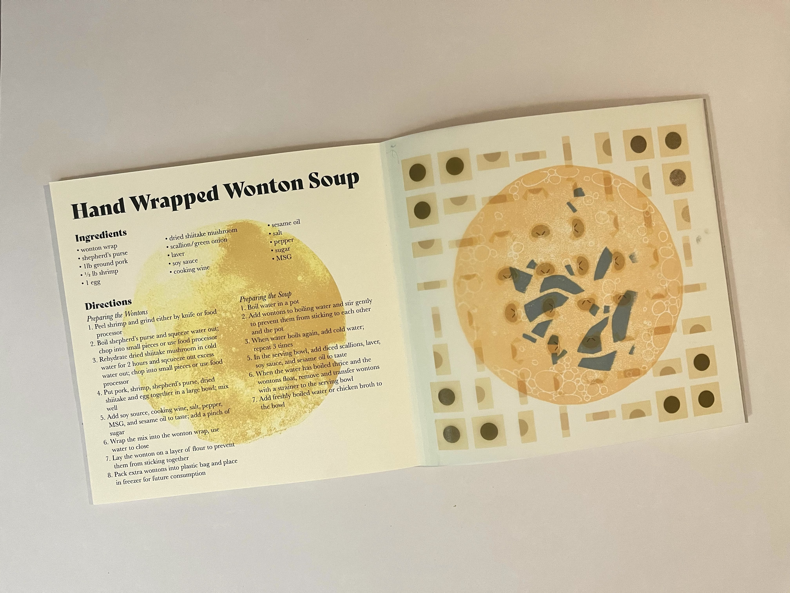
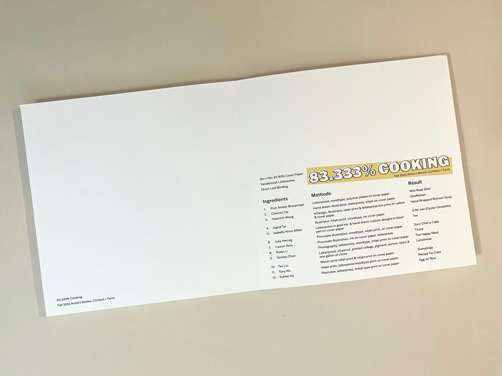
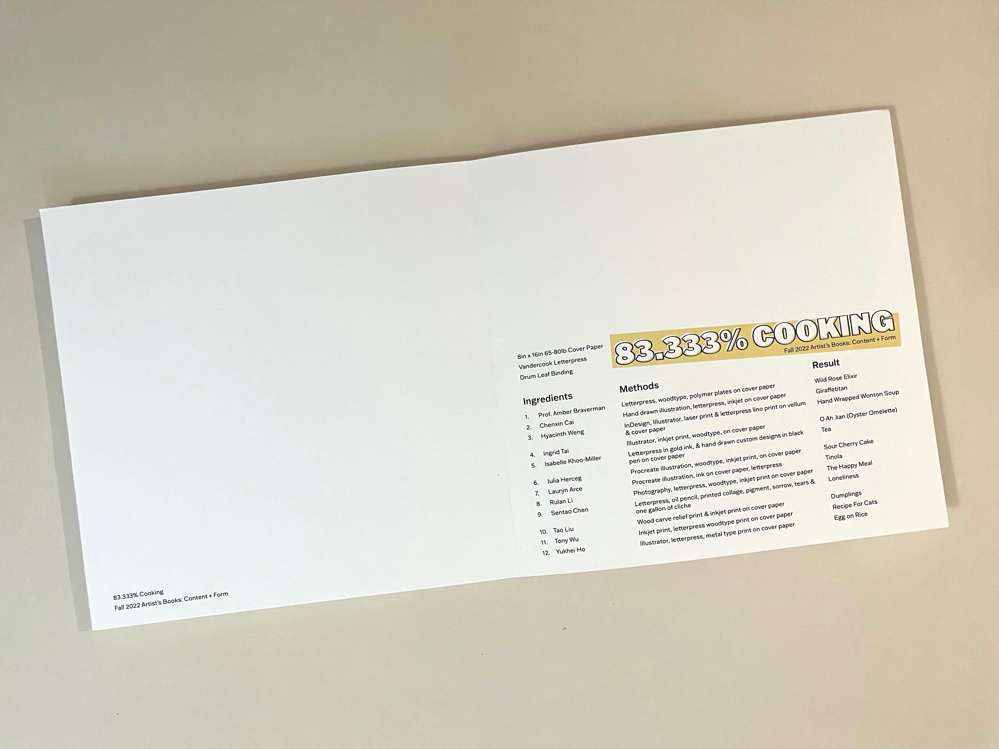

83.333% cooking
While each member of the class designed a spread for the individual recipes, the endsheets, title page, and colophon were also distributed to a couple people. I was in charge of the colophon. The endsheets were created from the handwritten notes of everyone in the class. The team members working on the title page also created the title '83.333% COOKING', representing the amount of actual food recipes in the book.

A number of people in the class were unable to bring their pages to class due to falling sick so some pages are missing.
recipe page
I chose Hand Wrapped Wonton Woup for my recipe, a dish I learned from my mom and a Shanghai culture staple. Each family has its own special formula, and I used the recipe my mom wrote down for me.
On the left page of the spread, I printed the recipe text with a regular laser printer on cream colored paper. I also added a soup-like texture in the background to mirror the design I wanted on the right page.
 

On the right page I made linoleum print blocks in the shape of soup (yellow) and seaweed garnish (green) and printed on the page with a Vandercook letterpress.
I used wonton graphics I created for this previous project to make a pattern of wontons being wrapped. Each graphic depicts a step in wrapping a wonton. I printed the wonton pattern on vellum paper to overlay it onto the lino print underneath.
colophon
I wanted the colophon to be on theme with the rest of the book's contents while also being adequately informative and easy to understand. I formatted the text to follow a recipe format with "ingredients" being class members, "methods" being materials/methods used to make each page, and "result" being the name of each recipe. The pages are ordered by first name, and I additionally included paper weight, letterpress, binding method, and class for documentation.
 
